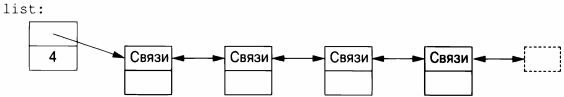
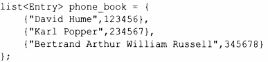
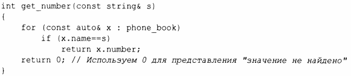
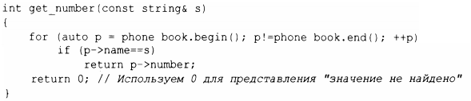
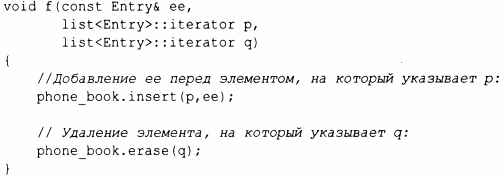
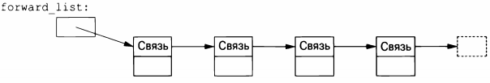

⇐11.2.2 Проверка выхода за границы диапазона 11.4 map⇒
Стандартная библиотека предлагает двусвязный список под названием list.
Мы используем list для последовательностей, в которые хотим эффективно вставлять (и удалять) элементы, не перемещая при этом другие элементы. Вставка и удаление записей телефонной книги может быть распространенной операцией, поэтому для представления простой телефонной книги подходящей структурой данных может оказаться list. Например:
Используя связанный список, мы, как правило, не обращаемся к элементам с использованием индексов, как обычно делаем это для векторов. Вместо этого мы можем искать в списке элемент с заданным значением. Для этого мы воспользуемся тем фактом, что list представляет собой последовательность, описанную в главе 12, "Алгоритмы":
Поиск s начинается с начала списка и продолжается до тех пор, пока не будет найдено значение s или не будет достигнут конец списка phone_bооk.
Иногда нам нужно идентифицировать элемент списка. Например, мы можем удалить элемент или вставить новый элемент перед ним. Для этого мы используем итератор: итератор списка идентифицирует элемент списка и может использоваться для итераций по списку (отсюда и его имя). Каждый контейнер стандартной библиотеки предоставляет функции begin () и end () , которые возвращают итераторы, указывающие на первый элемент и на элемент, следующий за последним, соответственно (глава 12, "Алгоритмы"). Используя итераторы явным образом, мы можем - менее элегантно - переписать функцию get_number () следующим образом:
На самом деле это примерно то же самое, как если бы компилятор реализовал цикл for по диапазону - более кратко и менее чревато ошибками. Для данного итератора р запись *р - это элемент, на который ссылается итератор; ++р перемешает р для обращения к следующему элементу, а когда р относится к классу с членом m, то запись p->m эквивалентна записи ( *р) . m.
Добавление элементов в list и удаление их оттуда выполняется очень легко:
Для списка list вызов insert (р, elem) вставляет элемент с копией значения elem перед элементом, на который указывает р. Здесь р может быть итератором, указывающим на элемент, следующий за концом списка. И наоборот, erase (р) удаляет элемент, на который указывает р, и уничтожает его.
Эти примеры с list могут быть записаны идентично с использованием vector и (что кажется удивительным, если вы не понимаете архитектуру машины) лучше работают с небольшим вектором, чем с небольшим списком. Когда все, что мы хотим, - это последовательность элементов, у нас есть выбор между использованием vector и list. Если у вас нет особой причины поступить иначе, используйте vector. Вектор лучше работает в случае обхода (например, при работе find () и count ()) и при сортировке и поиске (например, с помощью sort () и equal _ range (), § 12.6, § 13.4.3).
Стандартная библиотека предлагает также односвязный список, именуемый forward list.
Список forward_list отличается от list тем, что допускает итерации только в одном направлении. Главная цель его существования - сэкономить память. В нем нет необходимости хранить указатель на предшественника в каждом элементе, а размер пустого списка forward list - всего лишь один указатель. forward_list даже не хранит количество элементов. Если вам нужно количество элементов, вы можете посчитать его сами.